Case study 2 · Wise · visual study
Transfers: show the whole cost before the user commits
From the homepage price to the button under your thumb, with Wise’s own before/after screens and an outside, numbered critique of the app.
- A
- Controlled test (A/B, holdback)
- B
- Insider number, no method given
- C
- Expert analysis, no data
- D
- Dated, news or unverifiable
Before an account exists
The price, on the homepage C
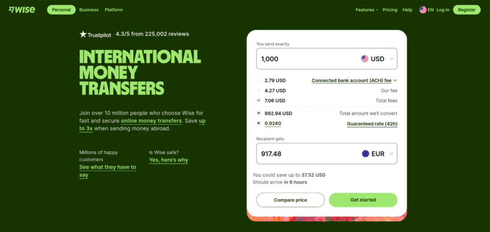
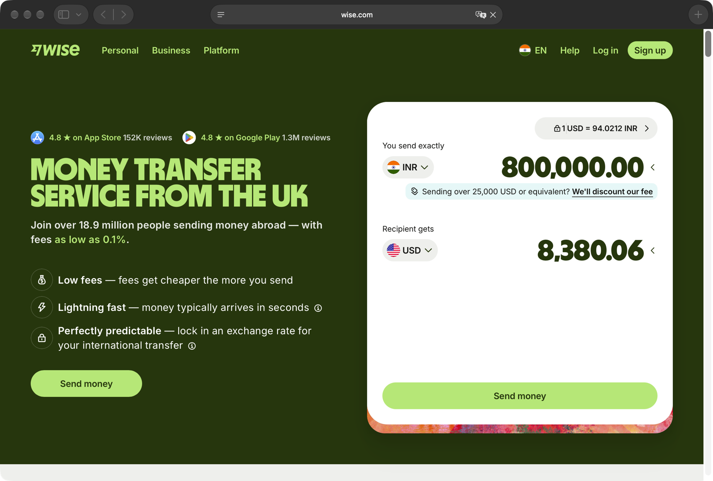
Wise puts the calculator on the homepage, before sign-up. In the published version: connected bank account fee 3.79 USD, Wise fee 4.27 USD, total fees 7.06 USD, amount converted 992.94 USD, guaranteed rate 0.9240, recipient gets 917.48 EUR. The fee is a separate line, not hidden in the rate.
Raw Studio: “Trust should be earned before commitment, not requested at the moment of commitment.”
our note On today’s first view the fee lines are not shown: only send amount, received amount and a locked rate chip (1 USD = 94.0212 INR). I didn’t type an amount or scroll, so the breakdown may appear after you interact. Worth checking before concluding Wise moved away from it.
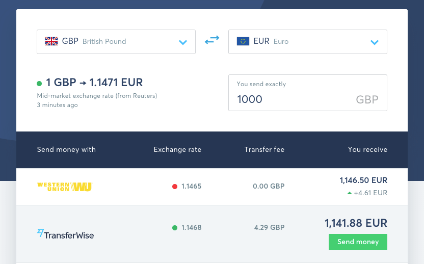
our note Read the table closely: here Western Union shows 0.00 GBP fee and 1,146.50 EUR received; TransferWise shows 4.29 GBP fee and 1,141.88 EUR. Laying fee and rate side by side lets the user see the real winner per transfer, even when it isn’t you.
Evidence Agency blog analysis, no data on Wise (C). Raw Studio, Jul 2026
Annotated critique · Pratt Institute
Onboarding: five screens, then fifteen with no map C
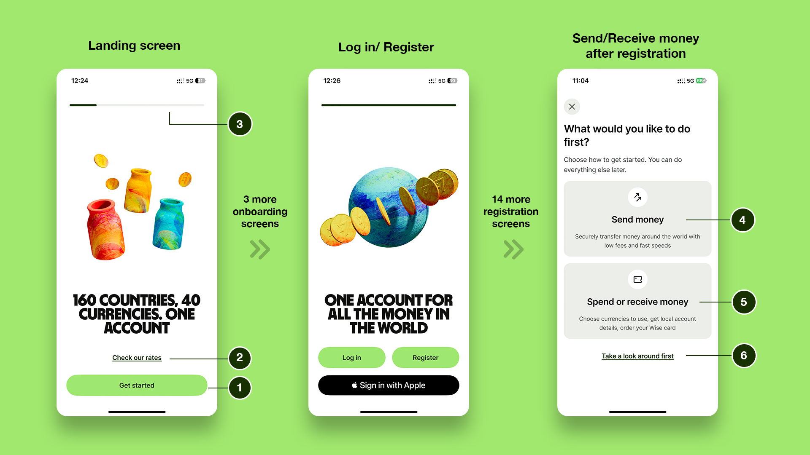
- 1“Get started” is always there, so anyone can skip the five intro screens.
- 2“Check our rates” lets someone who only wants the price get it without signing up.
- 3A progress signifier shows how far through the intro you are.
- 4–5After registering: “Send money” or “Spend or receive money”, straight to the user’s goal.
- 6“Take a look around”: the transaction is a request, not a demand.
The problem the critic found: after the intro come 15 registration screens with no progress indicator, and no “All set” confirmation at the end. The user doesn’t know how far they are or that they’re done.
Evidence Student design critique using Norman’s principles, no user data (C). IXD@Pratt, Sep 2025
Annotated critique · Pratt Institute
Sending money: amount first, everything visible C
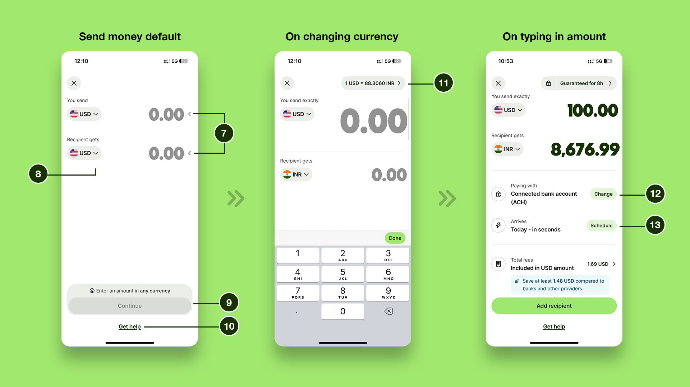
- 7An animated “<” beside both amount fields says “type here”, in either field.
- 8Standard currency dropdown, so nothing has to be remembered.
- 9“Continue” stays disabled until there is an amount, preventing a slip. (Note the hint above it, “Enter an amount in any currency”: the button prompt shown below.)
- 10“Get help” is always there.
- 11The rate appears top right the moment the currency changes. It is also a button to compare Wise with rivals, but the critic notes it doesn’t look tappable, “subtly benefiting the business”.
- 12Payment method chosen inline, with “Change”.
- 13Arrival time (“Today, in seconds”) and “Schedule” shown before you commit.
Typing in either field updates the other at once, so the user can work from “what I send” or “what they get”.
Evidence Student design critique, no user data (C). IXD@Pratt, Sep 2025
Inside Wise · Design Lead’s case study
The calculator redesign: +10% conversion B
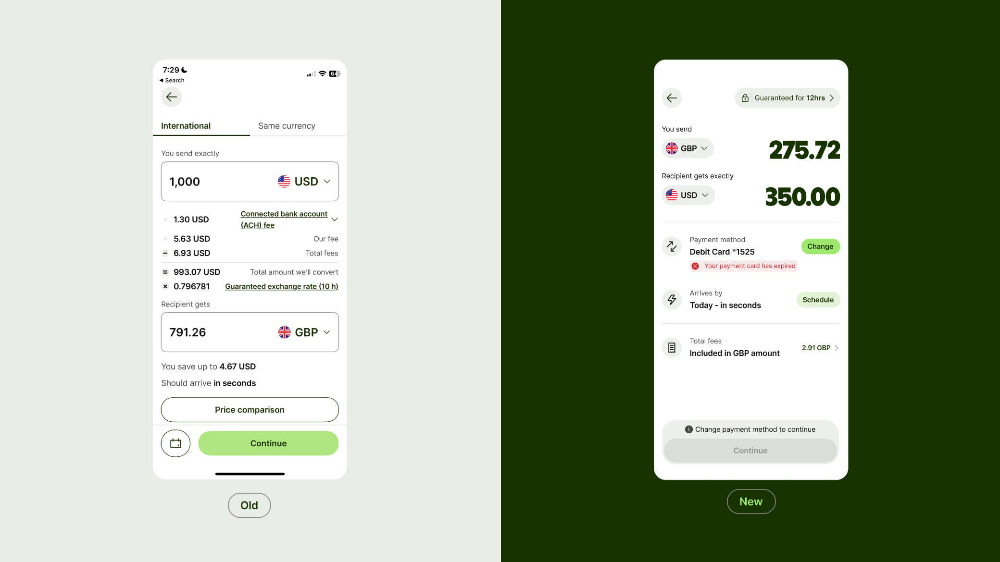
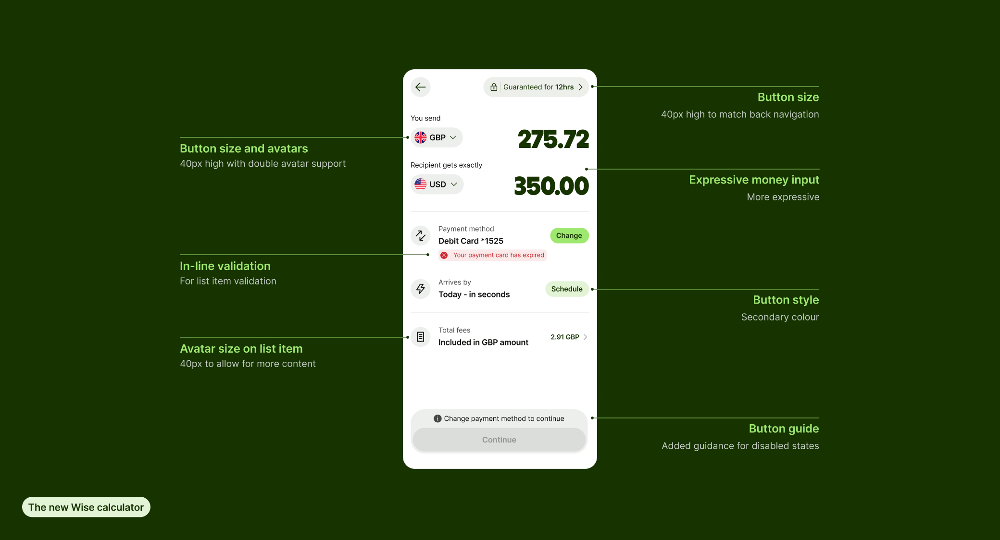
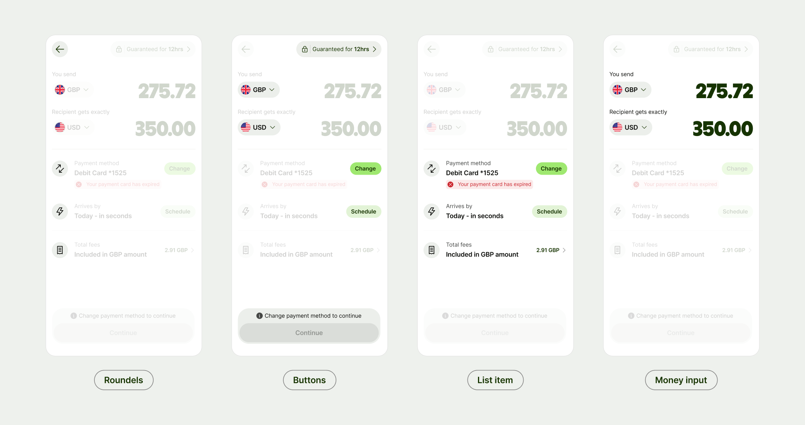
The calculator “has powered cross-currency transfers for over a decade, driving 87% of volume… Yet the flow had seen little change and remained a weak point for conversion.” Redesigning it exposed weak basic components, so the team fixed those in the design system rather than on one screen.
Results: +10% conversion from the new calculator, 10+ teams helped, 4 core money-movement flows on the new input.
our note No method, sample or period is given for the +10%. It is the only Wise number we have.
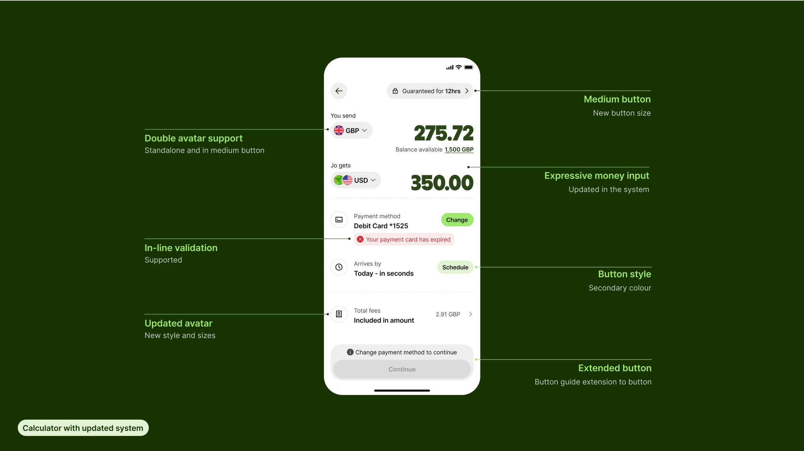
Evidence Insider number, no method (B). Ness Grixti, Wise Calculator Redesign
Inside Wise · before / after
The small parts that made the difference B
The disabled button now tells you why
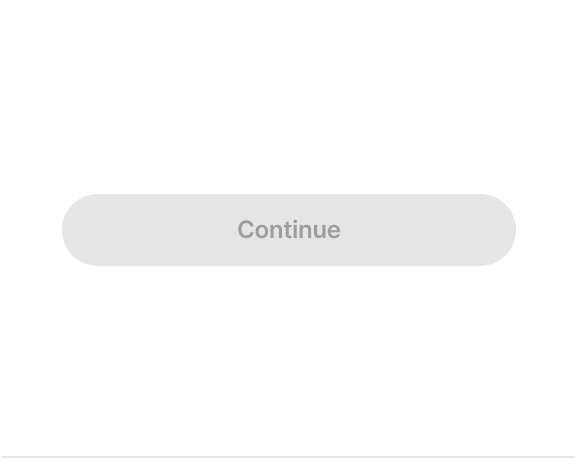
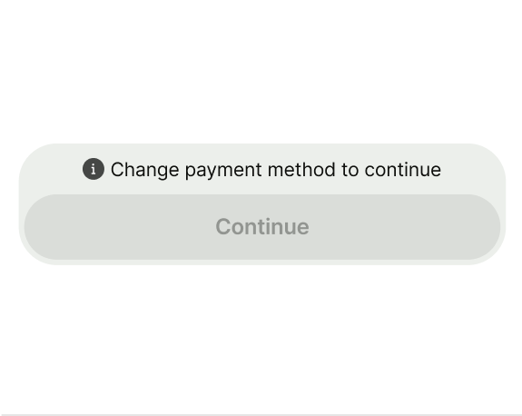
Tappable things look tappable
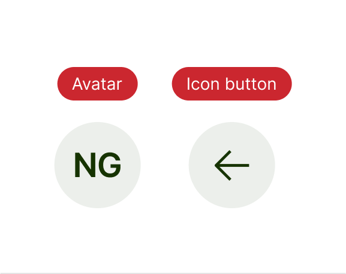
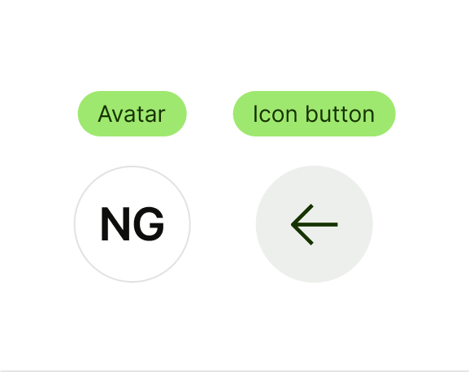
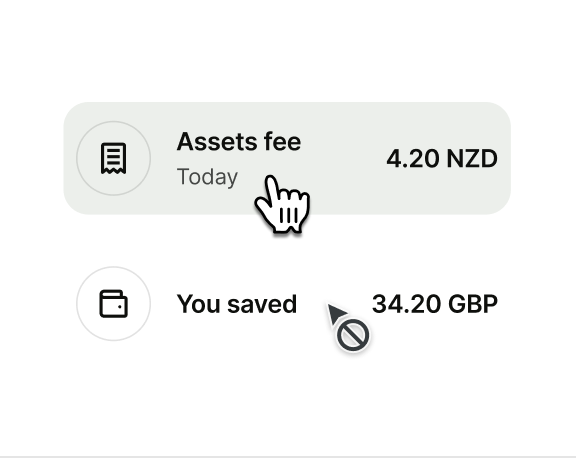
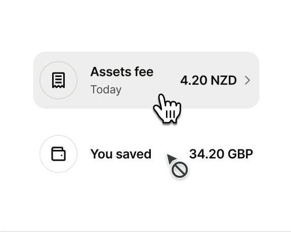
One system instead of many look-alikes
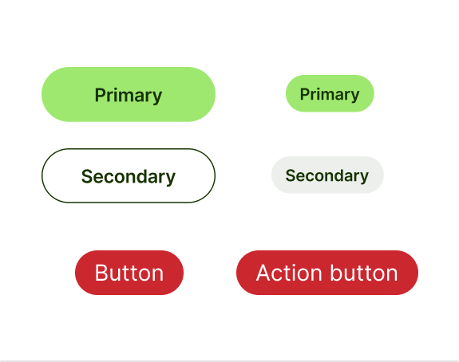
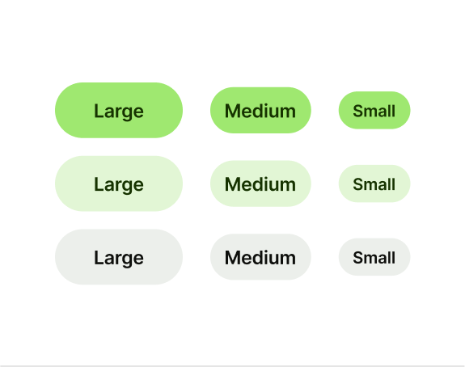
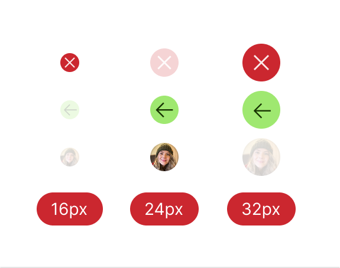
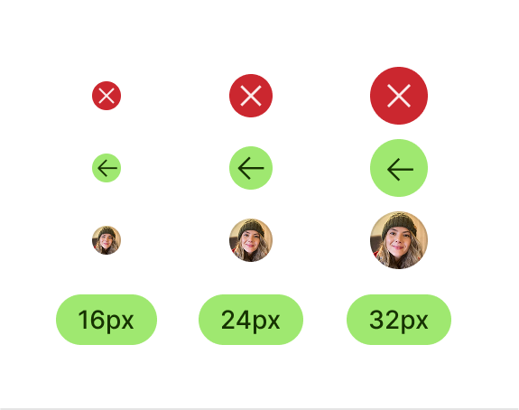
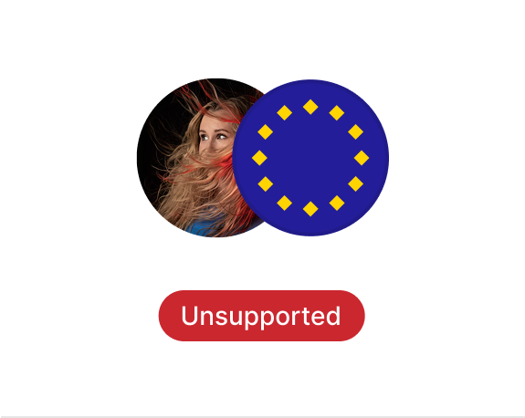
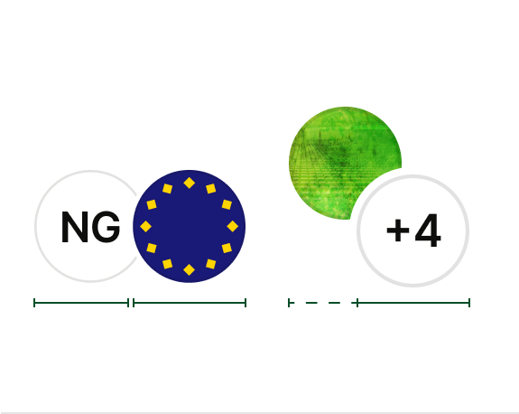
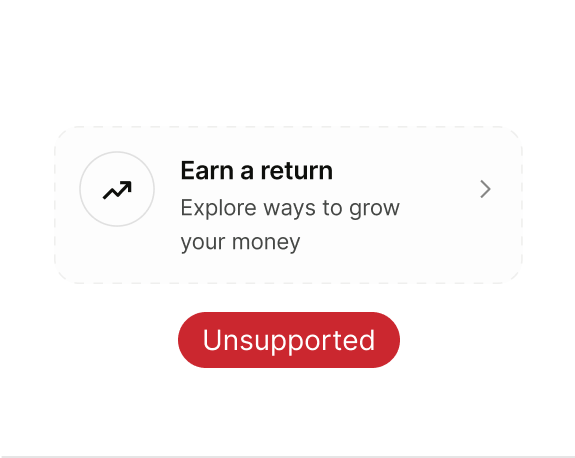
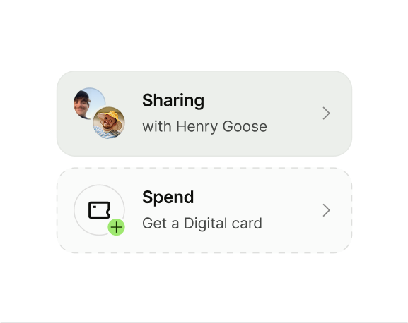
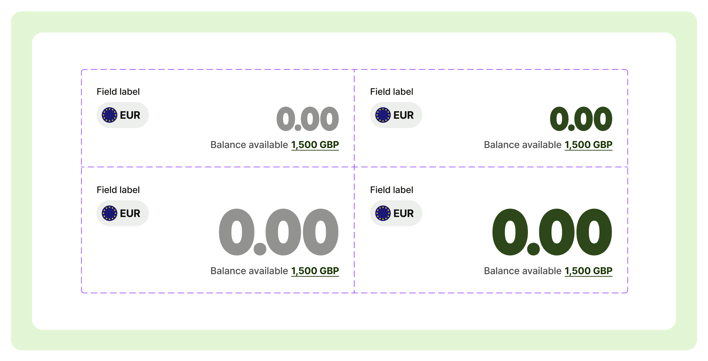
our note The button prompt is the most direct functional fix in this whole study. A grey button says “no”; the prompt says “here’s what to do”. Apple’s rule (Apple Pay, “One button, many verbs”) is the same.
Evidence All quotes are the Wise Design Lead’s captions (B, part of the +10%). Ness Grixti, Wise Calculator Redesign
Annotated critique · Pratt Institute
Home: the calculator sits below the ads C
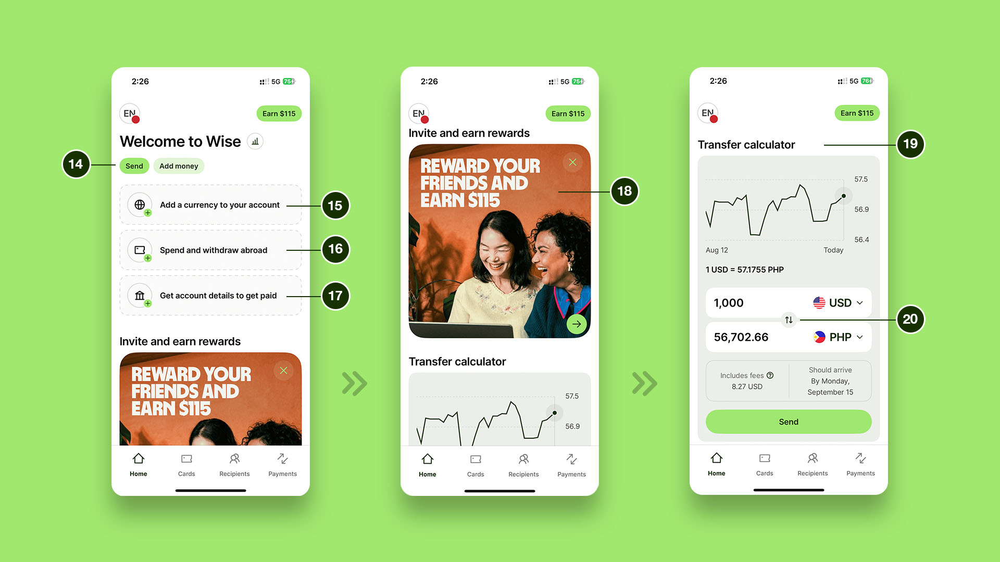
- 14“Send” is a small chip, not the hero.
- 15–17Add a currency / Spend abroad / Get account details take the centre.
- 18“Invite and earn rewards” sits above…
- 19…the Transfer Calculator, which needs a scroll to reach.
- 20The swap (invert) button is good design: a familiar icon, clear affordance.
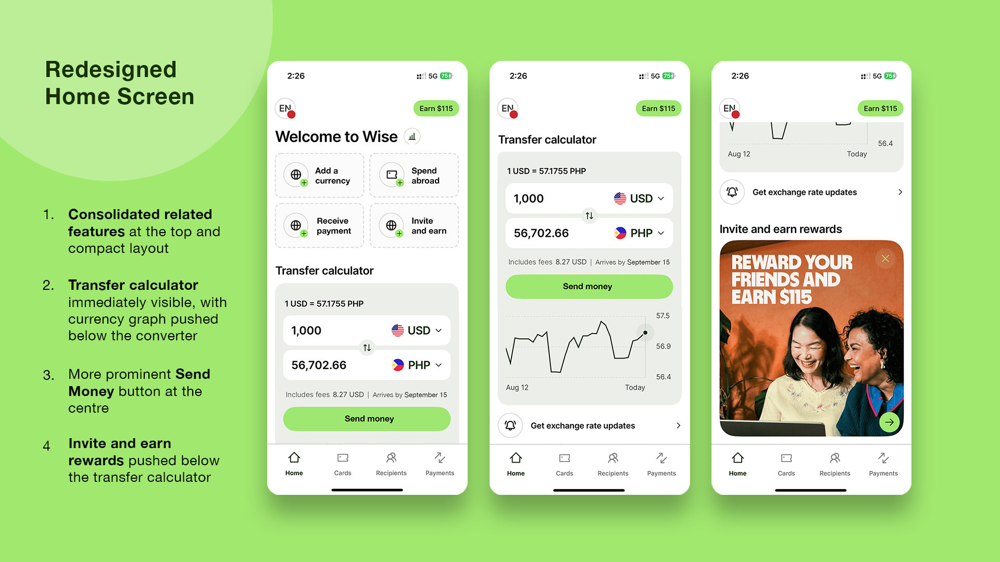
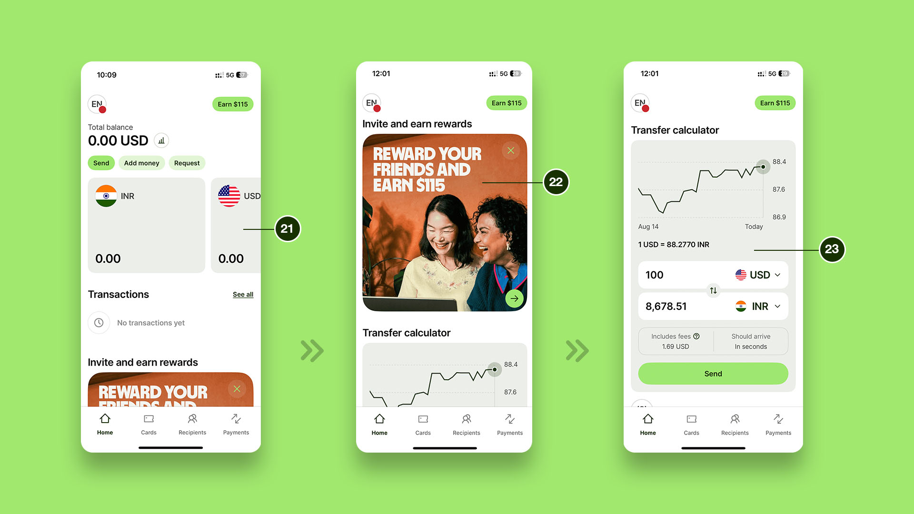
our note This is a proposal, not a tested change. It is useful as a way of reading a screen: every number is one decision, judged against one principle.
Evidence Student design critique, no user data (C). IXD@Pratt, Sep 2025
Honest gap
Tracking and identity checks: no real screens yet
Round 1’s Wise claims about the transfer tracker (initiated → processing → sent → received, with timestamps) and staged identity checks (“Step 2 of 4”, one upload per screen) come from 925 Studios. Their article’s images are stock photos, not Wise screens, so none are shown here.
Ways to get real screens: Built for Mars (paid) has “Making an international payment”; screen libraries like Mobbin or UXMagic need a sign-up; or capture them from your own Wise account.
Where the screens come from
- Calculator redesign and every before/after pair: Ness Grixti (Wise Design Lead), Wise Calculator Redesign.
- Annotated flows 1–23: IXD@Pratt, Design Critique: Wise (iOS App), Sep 2025.
- Homepage calculator and comparison table: Raw Studio, How Wise uses 3 transparency-first UX principles.
- Live calculator: captured by us from wise.com in Safari, 16 Nov 2026.